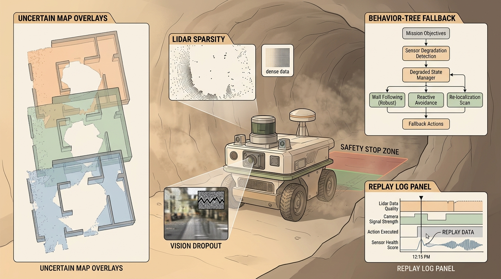

"A plan is only smart if the wheels, floor, people, and clock all agree to it."
A Local Planner With Commitment Issues

This section assumes familiarity with sensor-switching and localization confidence from section 8.7 and section 29.3. The degraded-mode planning loop developed here is extended in Chapter 31, where language goals replace hand-coded waypoints and the same confidence monitors gate semantic commands. The formal safety and runtime-monitor treatment recurs in section 53.4 alongside robustness evaluation under distribution shift.
A warehouse robot rounds a dusty corner and its lidar returns noise. GPS is denied, the map is three weeks stale, and the next waypoint is forty meters away. This is where most navigation tutorials stop and real embodied systems begin. Modern robots are deployed precisely in these conditions: construction sites, underground mines, crowded markets, disaster rubble. Knowing how to plan a pretty path is not enough; a robot that cannot monitor its own sensing confidence and switch strategies mid-mission will fail at the moments that matter most. This section shows you how to build a degraded-mode planning loop, how to choose the right fallback policy, and how to measure whether your system actually held together when the assumptions broke.
Problem First
Field navigation starts when the assumptions break. Dust, darkness, wheel slip, GPS denial, glass, crowds, and map aging make the planner reason about confidence and fallback behavior. A lidar that returns clean geometry indoors may yield 80% noise returns in a dusty mine corridor, cutting usable points from 50,000 to under 10,000 per scan; this is called the sensing floor problem, and every field-deployable planner must define its response before the robot leaves the lab.
The sensing floor matters because point count governs everything downstream. Once point count drops below a geometry-dependent threshold, localization confidence, costmap density, and obstacle detection all degrade non-linearly. On a physical platform the result is not just reduced accuracy but abrupt failure. Iterative Closest Point (ICP) scan matching diverges when feature overlap falls below roughly 30% (a widely reported empirical threshold, as of 2024). To put that in physical terms: asking ICP to align two scans with less than 30% overlap is like trying to assemble a jigsaw puzzle when 7 out of every 10 pieces belong to a different box. The pose estimate then jumps, triggers incorrect replanning, and can steer the robot into the very obstacle it could no longer see.
The floor is determined by treating the sensor model statistically. Each return is classified as a valid surface reflection or a noise return based on intensity, return time, and neighbor density. The planner counts valid returns per scan, computes a rolling percentile over a short window, and compares it against a per-environment calibration baseline. When the ratio drops below the calibrated threshold, the confidence signal fires and the degraded-mode policy takes over.
The field stack must define degraded-mode policies before deployment. It should know when to slow down, switch sensors, request teleoperation, hold position, or retreat. Continuing without a confidence bound is not autonomy; it is unmanaged risk.
The best-looking route is not the best robot plan unless the controller can track it, the costmap reflects current hazards, and replanning has a defined trigger. Navigation quality is measured by executed motion, not only by path length.
Formal Model
Most navigation methods can be read as constrained search or optimization:
$$ u_t\in\mathcal U_{\mathrm{safe}}(b_t),\quad b_t=p(x_t,m,\text{hazards}\mid z_{\le t},u_{ The cost term names what the robot wants. The constraints name what reality permits: collision clearance, velocity and acceleration limits, curvature bounds, kinodynamic feasibility, perception confidence, and safety monitors. Think of the belief state $b_t$ as a weather forecaster's probability map, not a pinpoint position. A forecaster does not know exactly where tomorrow's storm will be; instead, she holds a distribution over possible storm tracks, updated each hour as new radar returns arrive. The robot does the same: it carries a probability cloud over where it might be, what the map currently looks like, and where hazards lurk, updated every time a new sensor reading comes in and every time the wheels turn. The action $u_t$ is then chosen to be safe across the entire cloud, not just its center, which is why a confident robot in a familiar corridor moves fast while the same robot in a smoke-filled mine slows to a crawl even if its best guess about position has not changed. Code Fragment 1 isolates the planning idea in a tiny runnable example. The goal is not to replace Nav2 or OMPL; the goal is to make the invariant visible before the full stack absorbs it. Expected output interpretation. The selected action tells you which safety bound fired first: localization confidence fell below threshold before map age or clearance triggered their own fallback. In a field log, that distinction matters because the right operator question is not "why did it stop," but "which monitored assumption became invalid first." In Nav2, degraded-mode recovery order is set by the Nav2 behavior trees, lifecycle management, costmap filters, OpenVINS or RTAB-Map localization, and ROS bag replay give the practical backbone for degraded sensing tests. The shortcut is a maintained safety and replay stack plus a project-specific risk policy. Keep the small implementation as a regression test. Use the maintained stack for maps, costmaps, behavior trees, controllers, plugins, simulation replay, and deployment telemetry. A common misconception is that "degraded sensing" simply means the robot should stop and wait until sensing is restored. Stopping is itself a policy with real-world consequences: blocking a corridor, missing a time-critical goal, or sitting indefinitely if sensing never recovers. A degraded-mode planner must select the least-risky action from a pre-defined policy set, which may be slow, retreat, replan with reduced map confidence, switch to a different sensor modality, or request operator assistance. The choice depends on which confidence bound fired and what the deployment context permits, not on the assumption that the environment will return to a clean state on its own. Every planner in this chapter should be replayed with blocked corridors, moving obstacles, localization jumps, stale costmaps, actuator saturation, and recovery failure. A plan that only works in a clean static grid is a sketch, not an embodied system. A confidence threshold that was calibrated indoors will silently misfire outdoors. Consider a concrete case: Boston Dynamics Spot deployed in a warehouse with OpenVINS localization confidence tuned to a feature-rich indoor environment (threshold 0.5). On a loading dock with uniform concrete and direct sunlight, visual feature count drops from ~400 to ~60 per frame, and OpenVINS reports confidence 0.38. The robot immediately enters A delivery robot should log global path, local command, costmap snapshot, controller error, nearest obstacle distance, replan count, and recovery action. Those fields separate a weak route planner from a bad local controller or an outdated perception layer. Before comparing planners, freeze the robot footprint, inflation radius, controller frequency, maximum velocity, acceleration limits, map resolution, and localization source. Otherwise the comparison silently mixes planner quality with robot configuration. A serious navigation report should also include a route replay, a costmap snapshot at the decision point, the exact recovery behavior that was enabled, and whether the final command respected the same kinodynamic limits used during planning. Foundation-model priors for sensor-failure recovery (2024-2025). Large vision-language models are being used as zero-shot priors to fill in missing modalities at inference time. GaussNav (Wang et al., "GaussNav: Gaussian Splatting for Visual Navigation," ICCV 2025) builds a 3D Gaussian scene representation from a handful of RGB frames and uses it as a fallback costmap when lidar returns drop below the sensing floor, achieving sub-10 cm localization error even when point-cloud density falls to 12% of baseline. The ETH Zurich Autonomous Systems Lab is extending this to legged robots where the Gaussian map is updated online at 20 Hz from a single depth camera during blackout intervals. Uncertainty-aware neural planners with runtime certification (2024-2025). Rather than switching between a learned policy and a hand-coded fallback, recent work trains a single planner that outputs a calibrated confidence interval alongside its action. SafeDreamer (Hao et al., NeurIPS 2024) uses a world model to predict the probability that a proposed trajectory will violate a safety constraint under the current belief state and refuses to commit to any plan whose violation probability exceeds a user-set budget. This lets the planner remain active in degraded conditions while bounding the risk of catastrophic failure, instead of falling back to a conservative stop-and-wait policy. Fleet-level confidence calibration via federated adaptation (2025-2026). Threshold mis-calibration across deployment environments is a recognized fleet-wide problem. The Carnegie Mellon Robot Learning Lab's RACER-Fed framework (2025) aggregates per-robot confidence error logs in a federated manner, fitting a per-environment calibration correction without sharing raw sensor data, and pushes updated thresholds to the fleet within one mission cycle. Early results show a 40% reduction in false-positive degraded-mode triggers on heterogeneous terrain compared to factory-set thresholds. Open problem for PhD research. All three directions above treat the degraded-mode policy and the confidence monitor as co-designed but separately evaluated components. A formal co-design theory that jointly optimizes the monitor threshold, the fallback policy, and the re-entry condition under a single Lyapunov-style stability certificate, while remaining tractable on real hardware without exhaustive failure enumeration, does not yet exist. A student who solves this for even one sensor modality (lidar or visual odometry) on a standard platform such as Spot or ANYmal would close a meaningful gap between learning-based and certifiable navigation stacks. A planner that ignores dynamics is a cartographer with excellent handwriting and no driver license. Can you state the search space, cost function, constraints, replanning trigger, controller interface, and failure metric for field navigation under degraded sensing? If not, the planner is not specified enough to deploy. Field navigation under degraded sensing is ready for embodied use when route quality, dynamic feasibility, local control, and recovery behavior are measured in the same replay. Create a three-scenario planning panel: clear route, blocked route, and dynamic obstacle. Report path cost, minimum clearance, replan count, controller saturation, and final mission outcome for the same robot model. Beginner (weekend): Build a degraded-sensing confidence monitor in Gymnasium using a custom GridWorld environment where sensor returns are randomly dropped at a configurable rate; implement the three-branch policy from Code Fragment 1 and log which fallback fires most often as drop rate increases from 0% to 80%. The key challenge is defining a meaningful confidence metric from partial observations without access to ground truth. Intermediate (1-2 weeks): Deploy a Nav2 behavior tree on a TurtleBot3 in Gazebo (or a real unit) that detects lidar degradation by monitoring point-cloud density, switches to wheel-odometry-only localization when density drops below a calibrated threshold, and replays the full degradation event using ROS2 bag files with synchronized Continue to Chapter 31: Language-Guided Embodied Agents, where this planning contract connects to the next embodied capability. LaValle, S. M. "Planning Algorithms." Cambridge University Press, 2006. http://lavalle.pl/planning/ Open textbook reference for graph search, sampling-based planning, configuration spaces, and kinodynamic planning. OMPL Project. "Open Motion Planning Library." Official documentation. https://ompl.kavrakilab.org/ Primary tool reference for sampling-based planners such as RRT, RRTstar, PRM, and kinodynamic variants. ROS 2 Navigation Project. "Nav2 documentation." Official documentation. https://navigation.ros.org/ Primary documentation for global planners, controllers, costmaps, behavior trees, and recovery behaviors.
Worked Diagnostic
# Select a degraded-mode response from confidence signals.
# The policy chooses the least risky action before full failure.
signals = {"localization": 0.42, "costmap_age_s": 3.8, "clearance_m": 0.31}
if signals["localization"] < 0.5:
action = "hold_and_relocalize"
elif signals["costmap_age_s"] > 2.0:
action = "slow_and_refresh_map"
elif signals["clearance_m"] < 0.35:
action = "stop_and_replan"
else:
action = "continue"
print(action)recovery_plugins list in bt_navigator.yaml, not by the behavior tree XML itself. Teams frequently add a custom spin or wait recovery in the XML but forget to register it in the YAML list, so Nav2 silently skips it and falls through to the default clear_costmap_recovery. List every plugin you intend to use in recovery_plugins before testing, and run ros2 param get /bt_navigator recovery_plugins at startup to confirm the live set matches your config file.Tool Workflow
hold_and_relocalize, which is the correct policy for the indoor calibration, but wrong here because the pose estimate is still accurate to 4 cm; the low confidence reflects texture poverty, not localization error. The fix is separate thresholds for each deployment context, validated by comparing reported confidence against ground-truth error on a per-environment dataset before each deployment.Project Ideas
/scan, /odom, and /cmd_vel topics. The key challenge is tuning separate confidence thresholds for the simulated and physical environments so the robot does not false-trigger in low-texture open spaces. Advanced (3-4 weeks): Train a proprioceptive slip-recovery controller in Isaac Lab with randomized floor friction (0.1 to 0.9) and transfer it to a LeRobot-compatible quadruped policy that overrides the Nav2 local controller when Inertial Measurement Unit (IMU)-detected slip exceeds a threshold, then evaluate mission-completion rate on three surface types against a classical reactive fallback. The key challenge is bridging the Isaac Lab sim-to-real gap for contact dynamics without hardware fine-tuning.What's Next?
Section References